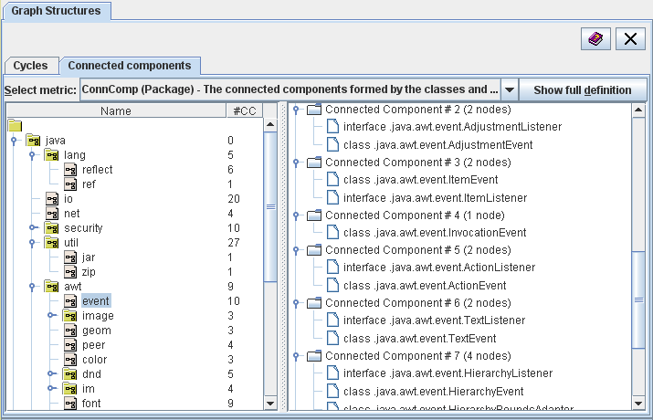

| Prev - Next - Down | SDMetrics - the UML design measurement tool |

Figure 19: Graph Structures View - Connected Components
From the dropdown list at the top, you can select the metric for which you want to show the connected components. Click the "Show full definition" button to view the definition of the metric in the measurement catalog (Section 4.13 "The View 'Catalog'").
The tree on the left hand side shows the model elements for which the connected components are calculated. Column "#CC" indicates the number of connected components for each model element. If you select a model element in the tree, the connected components will be shown in a tree structure on the right hand side.
The top level nodes of the right hand side tree represent the connected components. The child nodes represent the model elements of each connected component.
| Prev | Up | Next |
| Section 4.11.1 "Viewing Cycles" | Contents | Section 4.12 "The View 'Model'" |